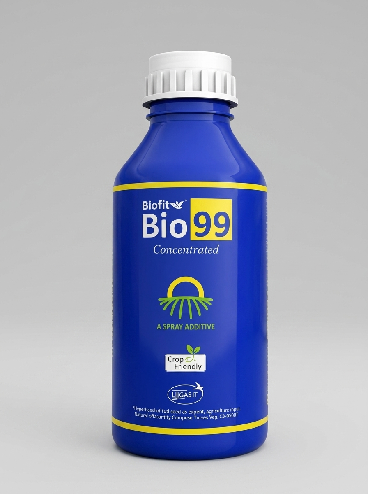
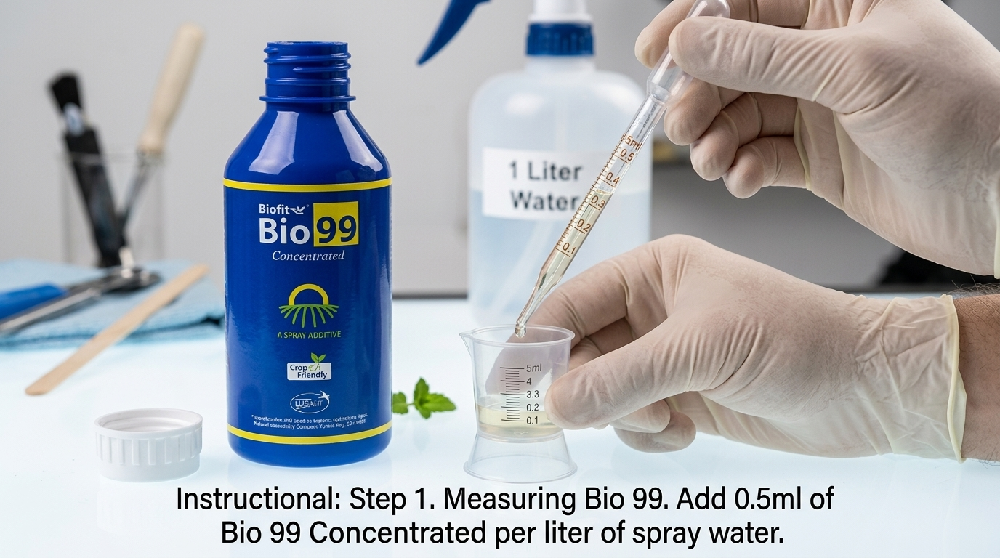

Silicon non-ionic spreader, sticker, and activator that dramatically enhances spray penetration and coverage.

Add just 0.5 ml of Bio 99 Concentrated liquid per 1 Liter of spray water / pesticide tank solution.
Mix into your sprayer tank. Reduces droplet surface tension for uniform leaf coverage and rain-wash prevention.